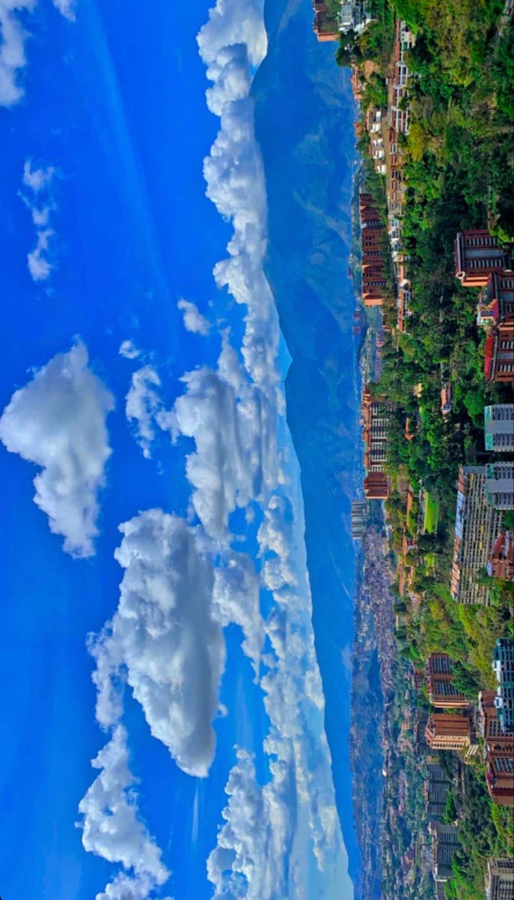

Colômbia
Dados gerais
| Capital | Bogotá |
| População | 52 milhões |
| Área | 1,14 milhão de km² |
| Idioma oficial | Espanhol |
| Moeda | Peso colombiano |
| Forma de governo | República presidencialista |
A Colômbia ocupa o extremo noroeste da América do Sul e é o único país do continente com costa tanto no Pacífico quanto no Caribe. Seu território abrange três cadeias da Cordilheira dos Andes, a Amazônia, os Llanos Orientais e as ilhas caribenhas. Essa diversidade geográfica faz da Colômbia um dos países com maior biodiversidade do planeta.

Cultura e sociedade
A cultura colombiana é rica e diversa, refletindo suas raízes indígenas, africanas e espanholas. O vallenato, ritmo musical nascido na costa caribenha e reconhecido pela UNESCO, é símbolo cultural do país. Gabriel García Márquez, Nobel de Literatura e um dos pilares do realismo mágico, é orgulho nacional.
O café colombiano é mundialmente reconhecido pela sua qualidade. A região cafeeira — com seus morros cobertos de plantações — foi declarada patrimônio cultural da humanidade. O país é também um dos maiores produtores de flores do mundo, exportando principalmente para os Estados Unidos e Europa.
Turismo
Cartagena das Índias, com seu centro histórico murado e arquitetura colonial caribenha, é um dos destinos turísticos mais visitados da América do Sul. Bogotá surpreende pelos museus — o Museo del Oro e o Museo Botero são imperdíveis. O Parque Tayrona e a Cidade Perdida atraem viajantes em busca de natureza e aventura.